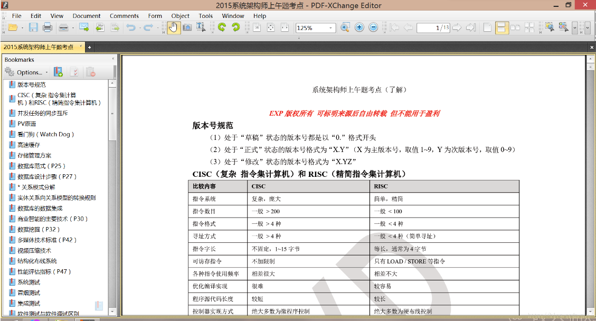
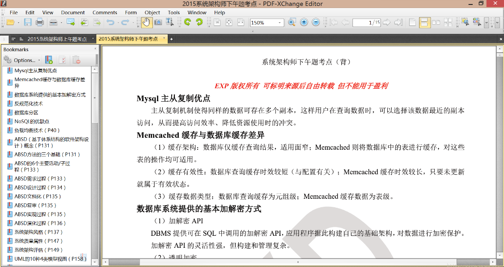
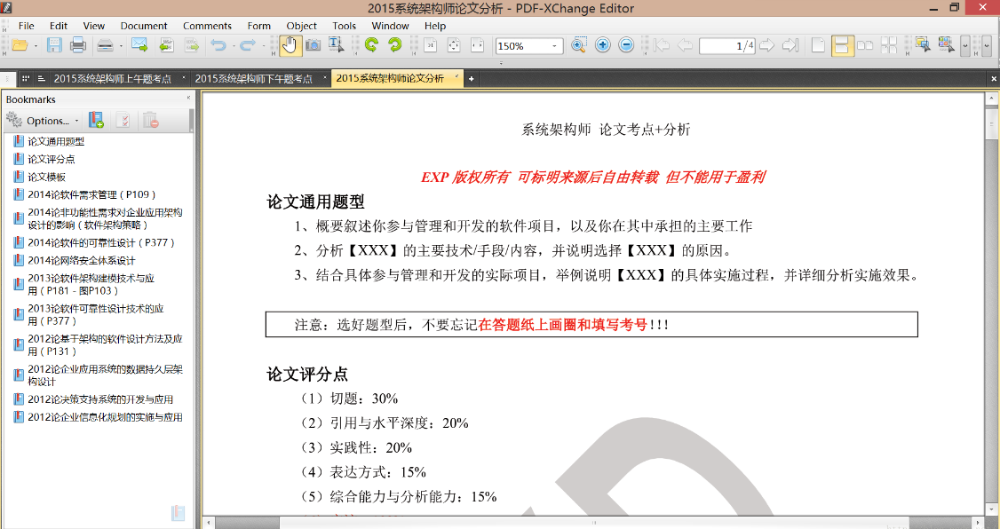
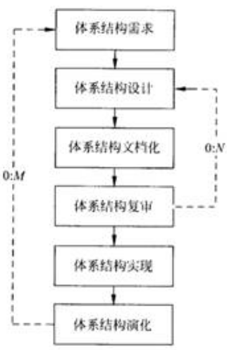

前言
经过一年的复习，鄙人终于通过了 15 年的 【系统架构师】 资格考试。
为了更多人都可以通过，分享一下我自己整理的复习要点~
不过现在 架构师 的考点还不稳定，大家在复习的时候也要善于自己总结哦！
我整理复习资料分为【上午题】【下午题】【论文】三部分，
结合了0714年的真题，去除了重复题型整编的
- 【上午题（Go）】以理解为主，当然如果有能力背下来是最好的
- 【下午题（Go）】以背为主，当然最理想是都实践过这些知识点，理解了才更好背
- 【论文题（Go）】我只有给提纲，这个必须多练~ 除了练题型，也要练字迹、练手速
因为下午题（2.5H）完了之后，休息 15min 就要写论文，论文只有 2H，想合格 3000 字是必须的 ~
换言之你需要连续写字写 4.5H，不想手腐就写写写写吧，至少一星期一篇。
顺便吐槽一下 15 年的考试~~
上午题偏僻~ 下午题偏易~ 论文题有架构风格肯定大众必选的 45 分保底题型~



本文标题后若标注了【Pxx】字样，表示在《系统架构设计师教程》的第 xx 页有相关内容
上午题
版本号规范
- 处于“草稿”状态的版本号都是以“0.”格式开头
- 处于“正式”状态的版本号格式为“X.Y”（X为主版本号，取值1
9，Y为次版本号，取值09） - 处于“修改”状态的版本号格式为“X.YZ”
CISC（复杂 指令集计算机）和RISC（精简指令集计算机）
| 比较内容 | CISC | RISC |
|---|---|---|
| 指令系统 | 复杂，庞大 | 简单，精简 |
| 指令数目 | 一般 > 200 | 一般 < 100 |
| 指令格式 | 一般 > 4种 | 一般 < 4种 |
| 寻址方式 | 一般 > 4种 | 一般 < 4种（简单寻址） |
| 指令字长 | 不固定，1~15字节 | 等长，通常为4字节 |
| 可访存指令 | 不加限制 | 只有LOAD / STORE等指令 |
| 各种指令使用频率 | 相差很大 | 相差不大 |
| 优化编译实现 | 很难 | 较容易 |
| 程序源代码长度 | 较短 | 较长 |
| 控制器实现方式 | 绝大多数为微程序控制 | 绝大多数为硬布线控制 |
| 芯片设计复杂度 | 高 | 低 |
| 软件系统开发时间 | 较短 | 较长 |
| 操作 | 可以对存储器和寄存器进行算术和逻辑操作 | 设置大量通用寄存器，访问存储器指令简单， 只能对寄存器进行算术和逻辑操作 |
| 执行时间 | 有些指令执行时间很长 | 选取使用频率较高的一些简单指令， 且指令执行时间较短 |
并发任务的同步互斥
- 同步：进程间的直接制约关系，如生产者消费者问题
- 互斥：进程间的间接制约关系，如临界资源的PV操作
PV原语
- P原语：Proberen（测试），为阻塞原语，负责把当前进程由运行态转为阻塞态，等待唤醒。
其操作为：申请一个空闲资源（信号量-1），成功退出，失败阻塞。 - V原语：Verhogen（增加），为唤醒原语，负责唤醒一个阻塞进程。
其操作为：释放一个被占用的资源（信号量+1）。
看门狗（Watch Dog）
WDT（Watch Dog Timer）是一个定时电路，一般有一个输入，叫“喂狗”，一个输出到MCU（微控制单元）的RTS端（标志位，表示复位连接）。
MCU正常工作时，每隔一段时间输出一个信号到喂狗端清零，若超时不喂狗，WDT定时器超时，就会给出复位信号（复位中断）到MCU，使MCU复位，防止死机。
WDT的作用就是防止程序死循环或跑飞（系统受到干扰后偏离正常运行的路径）。
高速缓存
高速缓存介于CPU与主存（内存）之间，利用局部性原理消减CPU与主存之间的速度差以提升系统性能。其工作速度数倍于主存，全部功能由硬件实现，且对程序员透明。
存储管理方案
- 覆盖：编程时必须划分程序模块和确定程序模块之间的调用关系，不存在调用关系的模块可以占用相同的主存区。
- 固定分区：在系统进行初始化的时候就已经将主存空间划分成大小相等或不等的块，并且这些块的大小在此后是不可以改变的。系统将程序分配在连续的区域中。
- 请求分页：主存空间和程序按固定大小单位进行分割，程序可以分配在不连续的区域中。该方案当一个作业的程序地址空间大于主存可以使用的空间时也可以执行。
数据库范式（P25）
- 1NF：原子式。
- 2NF：所有字段都必须与主键有直接或间接相关，允许某些字段与候选码传递或非传递依赖。
- 3NF：所有字段都必须与主键直接相关，允许某些字段与候选码传递或非传递依赖。
- BCNF：所有字段都必须与主键直接相关，不允许存在字段与候选码有传递或非传递依赖。
数据库设计步骤（P27）
- 需求分析：DFD
- 概念结构设计：E-R图
- 逻辑结构设计：确定数据模型（由E-R图转换）、约束
- 物理结构设计：利用DBMS设计数据库
- 应用程序设计：对DBMS的二次开发，存储用户信息，实现用户处理要求
- 运行维护：数据的转储和恢复、安全性和完整性控制、性能监督、数据库重组等
* 关系模式分解
无损分解算法：LOSSLESSTEST(R, F ,p) 算法。
定理：
- 关系模式R(U)，分解为 p={R(U1),R(U2)}
- p是无损连接的，当且仅当
- U1∩U2 → U1-U2 或 U1∩U2 → U2-U1
分解保持依赖 - 最小依赖集：
- ① 将F中的所有依赖右边化为单一元素
- ② 去掉F中的所有依赖左边的冗余属性
- ③ 去掉F中所有冗余依赖关系
实体关系向关系模型的转换规则
- 多对多的联系 [必须] 转换成一个独立的关系模式
- 一对多的联系既可以转换成一个独立的关系模式，也可以与多端关系模式合并（此时需把一端的码合并到多端关系模式中）
数据库的数据集成
- 若单表即可完成整合，则可以将该表封装为记录，采用 [主动记录] 方式进行集成
- 若需要多表进行数据整合，则需要采用 [数据映射] 方式完成数据集成与处理
商业智能的主要技术（P30）
数据仓库、联机分析、数据挖掘
数据挖掘（P32）
- 目标：从数据库的大量数据中揭示出隐含的、先前未知的并有潜在价值的信息。
- 挖掘信息特征：先知、有效、实用。
- 主要功能（任务）：自动预测趋势和行为、关联分析、聚类、概念描述、偏差检测。
- 挖掘技术：关联分析、序列分析、分类分析、聚类分析、预测、时间序列分析。
- 挖掘流程：确定挖掘对象、准备数据、建立模型、数据挖掘、结果分析、知识应用。
多媒体技术标准（P42）
- 静态图像压缩编码标准：JPEG
- 运动图像压缩标准：MPEG
- MPEG-1：应用于VCD、CD、MP3
- MPEG-2：应用于DVD、HDTV
- MPEG-4：面向低速、低码率的传输条件（如移动网）
另外，MPEG-7是多媒体接口标准，MPEG-21是多媒体框架标准
视频压缩技术
视频图像本身在时间和空间上都存在冗余信息。
视频图像压缩技术的基本思想和方法可归纳为：
- 在空间上，图像数据压缩采用JPEG压缩方法去除冗余信息，主要包括 [帧内预测] 和 [变换编码]
- 在时间上，图像数据采用 [帧间预测编码] 和 [运动补偿] 去除冗余信息。
视频压缩中包括 [有损压缩] 和 [无损压缩] 两种：
- 无损压缩： [哈夫曼编码]**、 **[行程编码]
- 有损压缩： [预测编码]**、 **[变换编码]**、 **[运动补偿]
结构化布线系统
- 工作区子系统（如PC到房间路由）
由终端设备到信息插座的整个区域，用于将终端设备连接到布线系统。 - 水平子系统（如房间内多个PC间的拓扑支线）
连接用户工作区与布线系统主干的子系统，起支线作用，将所有用户通过连接件连接到配线设备上。 - 管理子系统（如房间路由到楼层交换机）
对布线电缆进行端接及配线管理的子系统，由各种交换设备（如集线器、交换机等）组成。 - 干线子系统 / 垂直子系统（如各楼层交换机之间的连接干线）
连接各管理间、设备间的子系统。 - 设备间子系统（如大楼网箱）
主要用于安放网络关键设备（如程控交换机等），地位重要，但不一定有，大型建筑一般有多个。 - 建筑群子系统（如大楼间的光纤电缆、无线网等）
连接楼群间通信传输介质及各种支持设备组成的子系统，传输介质可以是有线或无线。
性能评估指标（P47）
- 计算机：时钟频率（主频）、运算速度、运算精度、内存容量、存取周期等等
- 路由器：设备吞吐量、端口吞吐量、丢包率、时延、时延抖动等等
- 交换机：背板吞吐量、换成区大小、最大MAC地址表大小、负载均衡等等
- 网络：设备级性能指标、网络级性能指标、应用级性能指标、用户级性能指标、吞吐量
- 操作系统：可靠性、吞吐量（率）、系统响应时间、系统资源利用率、可移植性
- 数据库管理系统：数据库大小、表数量、单表大小、单表允许最大行/列/索引数量等等
- Web服务器：最大并发连接数、响应延迟、吞吐量
系统测试
系统测试是将已经确认的软件、计算机硬件、外设和网络等其他因素结合在一起，进行信息系统的各种集成测试和确认测试。
系统测试根据系统方案说明书来设计测试用例，常见的测试内容包括恢复测试、安全性测试、压力测试、性能测试、可靠性测试、可用性测试、可维护性测试和安装测试。
冒烟测试
将代码更改嵌入到产品的源代码之前，对这些更改进行验证的过程。
采用极限编程（XP）的“持续集成”策略有助于建立冒烟测试的环境。
集成测试
| - | 非增量式测试 | 增量式测试 |
|---|---|---|
| 错误定位 | 不容易定位错误 | 容易定位错误、排除故障 |
| 测试强度 | 小 | 大，先加入的模块经过多次测试，测试更彻底 |
| 测试工作量 | 小 | 大 |
| 测试进度 | 对各个模块可以并行测试，加快测试进度 | 测试过程长、进度慢 |
| 测试辅助程序 | 每个中间模块的测试都需要编写驱动模块和桩模块 | 自顶向下的增加需要编写桩模块 自底向上的增加需要编写驱动模块 |
软件测试与软件调试区别
- 测试是为了发现软件中存在的错误。调试是为了证明软件开发的正确性。
- 测试以已知条件开始，使用预先定义的程序，且有预知的结果，不可预见的仅是程序是否通过测试。调试以一段不可知的内部条件开始，除统计性调试外，结果是不可预见的。
- 测试是有计划的、需要进行测试设计。调试是不受时间约束的。
- 测试经历发现错误、改正错误、重新测试的过程。调试是一个推理的过程。
- 测试经常是独立的测试组在不了解软件设计的条件下完成的。调试必须由了解详细设计的开发人员完成。
- 大多数测试的执行和设计可由工具支持。调试时，开发人员能利用的工具主要是调试器。
单元测试-桩模块
桩模块是指 模拟 [被测试模块] [所调用的模块] ，而不是软件产品的组成部分。
主模块作为驱动模块，在单元测试时，与之直接相连的模块可用 桩模块 代替。
测试分类
- 负载测试：运行某些诊断程序，加大负载，检查哪个设备会发生故障。
- 集成测试：验证程序模块之间的接口是否正常起作用
- 白盒测试：根据程序的内部结构和内部逻辑，测试程序是否正确
- 基准测试：运行一个标准程序对多种计算机系统进行检查，以比较和评价它们的性能
基准测试程序（P49）
把应用程序中用得最多、最频繁的那部分 [核心程序] 作为评价计算机性能的标准程序，称为基准测试程序，一般使用公认的第三方测试。
四种评价程序的准确度（P49）
依靠评价程序评价机器的性能，按评测准确度由高至低的4种评价程序为：
真实的程序 > 核心程序 > 小型基准程序 > 合成基准程序
软件设计和软件测试
软件设计应从“宏观”的软件架构开始，“微观”的构件模块结束。
软件测试则相反，应从“微观”开始，“宏观”结束。
与电子政务相关的行为主体（P59）
政府、企业/事业单位、公民/居民
企业信息化目的（P62）
- 技术创新
- 管理创新：按照市场发展的要求，对企业现有的管理流程重新整合，
从作为管理核心的财务、资金管理，转向技术、物资、人力资源的管理，
并延伸到企业技术创新、工艺设计、产品设计、生产制造过程的管理，
进而还要扩展到客户关系管理、供应链的管理乃至发展到电子商务。 - 制度创新
ERP（企业资源计划）结构（P66）
- （1）生产预测：对市场需求进行预测，其结果用于计划。
- （2）销售管理计划：对销售部门的相关业务进行管理，属于决策层（最高层）计划。
- （3）经营计划（生产计划大纲）
根据经营计划的生产目标制定，是对企业经营计划的细化，用于描述企业在可用资源的条件下，在一定时期中的产量计划。 - （4）主生产计划
其编制是ERP的主要工作内容，是对企业生产计划大纲的细化，说明在一定时期内生产什么、生产多少和什么时候交货。 - （5）物料需求计划
是对主生产计划的各个项目所需的全部制造件和全部采购件的网络支持计划和时间进度计划，属于ERP管理层计划。 - （6）能力需求计划
是对物料需求计划所需能力进行核算的一种计划管理方法，能够帮助企业今早发现生产能力的瓶颈、为实现企业的生产任务而提供能力方面的保障。 - （7）车间作业计划
按照交货期的前后和生产优先级选择原则、以及车间的生产资源情况，将生产计划以订单形式下达给适当的车间，属于ERP执行层计划。 - （8）采购与库存管理
采购管理：对订单产生至货物收到的全过程进行组织、实施和控制。
库存管理：对企业物料的进、出、存进行管理。 - （9）质量与设备管理
质量管理：贯穿企业管理的始终。
设备管理：对设备寿命周期内的所有设备物资运动形态和价值运动形态进行综合管理。 - （10）财务管理：以货币形式反映和监督企业日常经济活动，为企业管理和决策提供必要的信息支持。
- （11）ERP有关扩展应用模块：如客户关系管理（CRM）、分销资源管理、供应链管理、电子商务等。
其中，（3）（4）（5）（6）（7）又称作是ERP的五层计划。
CRM（客户关系管理系统）的定位（P68）
在注重提高客户满意度的同时，一定要把帮助企业提高获取利润的能力作为重要指标。
企业门户分类（P74）
- 企业信息门户：强调为访问结构数据和无结构数据提供一个统一的入口
- 企业知识门户：强调提高企业范围内的知识共享，减少员工解决问题时间，提高工作效率
- 企业应用门户：提高企业集中贸易能力、协同能力和信息管理能力的平台
- 垂直门户：为某一特定的行业服务的，传送的信息值属于人们感兴趣的领域。
知识产权的相关法律法规（P88）
软件著作权的产生时间，是自软件开发完成之日时。
软件商标权的保护对象是软件注册商标。
为介绍、评论某一作品或者说明某一问题，在作品中适当引用他人已发表的作品，可以不经著作权人许可，不向其支付报酬。
法律法规，国家机关决议、决定、命令和其他具有立法、行政、司法性质的文件，及其官方译文均不适用或不受著作权法保护。
口述作品（如某人在公共场所的即兴演说）适用于著作权法，并受其保护。
著作权权利中，署名权、修改权、保护作品完整权的保护期不受时间限制，发表权的保护期限为作者终生及其死亡后五十年（截止于作者死亡后第五十年的12月31日）。
通过反向编译技术、净室技术、反向工程技术等获得他人软件技术构思、技术方案并直接用于其自身软件产品的行为，在我国暂无相关法律法规限制，在著作权法中不构成侵权（著作权法也不保护思想）。
商业秘密要受到法律保护，必须同时满足三个条件：不为公众所知悉、具有实用性、采取了保密措施。缺少任意一个均会丧失法律保护。
公司享有 [员工任职期间利用公司资源所开发的软件] 的著作权，不论是否和该员工签订了劳动合同。
专利法规定，申请专利的发明创造在 [申请日以前6个月内] ，有下列情形之一的不丧失新颖性：① 在中国政府主办或者承认的国际展览会上首次展出的；② 在规定的学术会议或者技术会议上首次发表的； ③ 他人未经申请人同意而泄露其内容的。
知识产权的保护以所执行国家的当地法律为准，不受被保护对象的身份国籍影响。
敏捷开发的核心思想 / 特点 （P98）
- 适应型而非预测型，拥抱变化
- 以人为本而非以过程为本，强调充分发挥人的特性
- 迭代增量式开发，以原型开发为核心，发行版本小型化
敏捷开发核心价值观（P99）
沟通、简单、反馈、勇气
敏捷开发实践规则（P99）
简单设计，测试驱动，代码重构，结对编程，持续集成，现场客户，发行版本小型化，系统隐喻，代码集体所有制，规划策略，规范代码，40小时工作制
极限编程（XP）的13个核心实践（P99）
团队协作、规划策略、结对编程、测试驱动开发、重构、简单设计、代码集体所有权、持续集成、客户测试、每周40小时工作制、编码规范、系统隐喻、小型发布
RUP（统一软件开发过程）阶段任务（P101）
- 初始：定义最终产品视图和业务模型，并确定系统范围。
- 细化：设计及确定系统的体系结构，指定工作计划及资源要求。
- 构造：构造产品并继续演进需求、体系结构，计划直至产品移交。
- 移交：把产品提交给用户使用。
每个阶段都由一个或多个迭代组成，迭代并非重复地做相同的事，而是针对不同用例的细化和实现。每一个迭代都是一个完整的开发过程（螺旋模型）。
项目管理工具（P108）
项目管理工具（如成本估算工具）用来辅助软件的项目管理活动。它通常把重点放在一个或某几个特定的管理环节上，而不提供对管理活动包罗万象的支持。
需求管理（P109）
需求管理是一个对系统需求变更、了解和控制的过程。
原则（策略）：
- 需求管理的关键领域不涉及收集和分析项目需求
- 开发人员在向客户以及有关部门承诺某些需求之前，应该确认需求和约束条件、风险、偶然因素、假定条件等。绝不承诺任务无法实现之事。
- 关键处理领域同样建议通过版本控制和变更控制来管理需求文档。
需求变更策略（P112）
- 所有需求变更必须遵循变更控制过程。
- 对于未获批准的变更，不应该做设计和实现工作。
- 变更应该由项目变更控制委员会决定实现哪些变更。
- 项目风险承担者应该能够了解变更数据库的内容。
- 决不能从数据库中删除或修改变更请求的原始文档。
- 每一个集成的需求变更必须能够跟踪到一个经核准的变更请求。
项目范围定义（P116）
项目章程、项目范围管理计划、组织过程资产、批准的变更申请
项目时间管理（P116）
项目时间管理的过程包括：活动定义、活动排序、活动的资源估算、活动的历时估算、制定进度计划、进度控制。
为了得到工作分解结构（WBS）中最底层的交付物，必须执行一系列的活动，对这些活动的识别以及归档的过程就叫做活动定义。
产品配置的配置项（P117）
- 属于产品组成部分的工作成果：需求文档、设计文档、源代码、测试用例等。
- 属于项目管理和机构支撑过程域产生的文档：工作计划、项目质量报告、项目跟踪报告等。
程序静态分析
在不执行程序的情况下，对其进行分析的技术。
其特点为：不实际执行程序，分析速度快、效率高，误报率较高。
相较之下的动态分析则需实际执行程序，多用于性能测试、功能测试、内存测试等。
静态分析技术
- 词法分析：逐字符读入源程序，使用正则匹配转换为等价符号流，生成相关符号列表。
- 语法分析：判断源程序结构上是否正确，通过上下文无关语法将相关符号整理为语法树。
- 抽象语法树分析：将程序组织成树形结构，树中相关节点代表程序中的相关代码。
- 语义分析：对结构上正确的源程序进行上下文有关的性质检查。
- 控制流分析：生成有向控制流图，用节点代表基本代码块，节点间的有向边代表控制流路径，反向边表示可能存在的循环，还可生成函数调用关系图，表示函数间的嵌套关系。
- 数据流分析：对控制流图遍历，记录变量的初始化点和引用点，保存切片相关数据信息。
- 污点分析：基于数据流图判断代码中哪些变量可能受到攻击，是验证输入、识别代码表达缺陷的关键。
- 无效代码分析：根据控制流图可分析孤立节点就是无效代码。
遗留系统的演化策略
淘汰、改造、继承、集成
逆向工程导出信息级别（P123）
- 实现级：包括程序的抽象语法树、符号表等信息
- 结构级：包括反映程序分量之间相互依赖关系的信息，如调用图、结构图。
- 功能级：包括反映程序段功能及程序段之间关系的信息。
- 领域级：包括反映程序分量或程序诸实体与应用领域概念之间对应关系的信息。
软件架构设计的生命周期（P125）
- 需求分析阶段：关注问题域
- 软件设计阶段：将需求转换为软件架构模型
- 软件实现阶段：关注将架构设计转换为实际代码
- 软件部署阶段：通过组装软件组件提高系统的实现效率
其中在设计和实现阶段对软件架构的关注度最大，软件系统架构必须建立在需求明确的基础上。
架构模式、设计模式、惯用法的区别
架构模式是软件设计中的高层决策，反映了开发软件系统过程中所作的基本设计决策。
设计模式主要关注软件系统的设计，与具体的实现语言无关。
惯用法是实现时通过某种特定的程序设计语言来描述构件与构件之间的关系。
软件架构的主要作用（P127）
分析设计在满足规定需求方面的有效性。
在设计变更相对容易的阶段，考虑体系结构可能选择的方案。
降低与软件构造相关联的风险。
软件架构策略
| 关键 | 问题 | 危害 | 策略 | 要点 |
|---|---|---|---|---|
| 是否遗留了至关重要的非功能需求 | 对需求理解不系统、不全面，对非功能需求不够重视 | 造成返工、项目失败 | 全面认识需求 | 从不同级别、不同类别梳理列表，归纳总结，建立跟踪矩阵 |
| 能否驯服数量巨大且频繁变化的需求 | 对于时间和质量的矛盾，办理不足，处理草率 | 耗时不少、质量不高 | 让关键需求决定架构：只分析和重点关注关键功能性需求和重要的质量属性需求 | 控制架构设计时需详细分析用例的个数，权衡非功能需求之间的关系，找到影响架构的重点非功能需求 |
| 能否从容地设计软件架构的不同方面 | 架构设计方案覆盖范围严重不足，许多关键决定被延迟由实现人员仓促决定 | 开发混乱、质量不高 | 多立场、多视角探寻架构：架构级设计是分层式的分而治之，子系统是功能性分而治之 | 一次只从某一主场、某一视角出发，围绕少数概念和技术展开，并分析对其他部分、其他立场视角分析结果的关系与影响 |
| 是否及早验证架构方案并作出调整 | 假设架构方案是可行的，直到后期才能发现问题，造成大规模返工 | 造成返工、项目失败 | 尽早验证架构：采用原型技术和框架技术 | 必须精挑细选能够触发主要设计决策参与执行的、或有较高技术风险的、或最影响用户满意度的一切功能进行验证 |
| 全面认识需求 | 功能需求 | 质量属性 | 约束 |
|---|---|---|---|
| 组织级 | 软件系统实现的功能 | - | 成本、上线时间、业务限制 |
| 用户级 | 软件系统实现的功能 | 易用性、性能、持续可用性、可靠性 | 用户的计算机水平有限 |
| 开发级 | 软件系统实现的功能 | 可扩展性、可重用性、可移植性、易理解性、易测试性 | 开发语言的约束 |
体系结构失配（P128）
- 由构件引起的失配：包括系统对构件基础设施、构件控制模型和构件数据模型的假设存在冲突。
- 由连接子引起的失配：包括系统对构件交互协议、连接子数据模型的假设存在冲突。
- 由于系统成分对全局体系结构的假设存在冲突引起的失配。
软件架构的重要性（P130）
- 能满足系统的品质
- 使受益人达成一致的目标
- 能够支持计划编制过程
- 对系统开发的指导性
- 能够有效管理复杂性
- 为复用奠定了基础
- 能够降低维护费用
- 能够支持冲突分析
DSSA特定领域架构的角色与任务（P145）
| 角色 | 任务 |
|---|---|
| 领域专家（软件工程师） | 提供关于领域中系统的需求规约和实现的知识，帮助组织规范的、一致的领域字典，帮助选择样本系统作为领域工程的依据，复审领域模型、DSSA等领域工程产品等 |
| 领域分析者（系统分析员） | 控制整个领域分析过程，进行知识的获取、将获取的知识组织到领域模型中，根据现有系统、标准规范等验证领域模型的准确性和一致性，维护领域模型 |
| 领域设计者（软件设计人员） | 控制整个软件设计过程，根据领域模型和现有的系统开发出DSSA，对DSSA的准确性和一致性进行验证，建立领域模型和DSSA之间的关系 |
| 领域实现者（程序设计人员） | 根据领域模型和DSSA，或者重头开发可重用构件、或者利用再工程的技术从现有系统中提取可重用构件，对可重用构件进行验证，建立DSSA与可重用构件之间的联系 |
ATAM体系架构权衡分析方法（P152）
主要关注系统的 [需求建模] ， 并在系统开发之前，针对 [性能、实用性、安全性和可修改性] 等质量属性进行评价和折中。
ATAM不是精确的评估工具，其整个评估过程强调以 [质量属性] 作为架构评估的核心概念。
在识别出质量属性的描述后，通常采用 [决策表] 对质量属性的描述进行刻画与排序。
ATAM分为4个主要的 [活动领域] ，包括需求收集、体系结构视图描述、属性模型构造和分析、折中。
软件设计阶段的度量
- 架构层次度量：考虑了设计模型的体系结构方面
- 构件层次度量：通过建立内聚、耦合和复杂度的简介度量，提供了模块质量的指示
- 界面层次度量：给GUI的布局提供了恰当性的提示
耦合程度
从低到高排列如下（越低越好）：
- 非直接耦合：两个模块间无直接联系，他们之间的联系完全是通过主模块的控制和调度实现的。
- 数据耦合：一个模块访问另一个模块时，彼此之间是通过简单数据参数来交换输入输出信息的。
- 标记耦合：一组模块通过参数表传递记录信息。这个记录是某一数据结构，而非简单变量。
- 控制耦合：一个模块通过传送开关、标识等控制信息，明显选择另一模块的内部功能。
- 外部耦合：一组模块通过访问同一全局简单变量（而非参数表或全局数据结构）来传递信息。
- 公共耦合：一组模块通过访问同一公共环境数据（而非全局简单变量）来传递信息。
- 内容耦合：一个模块直接修改或操作另一模块的数据，或者不通过正常入口转入另一模块。
文档评审
- 需求评审：进一步确认开发者和设计者已了解的用户要求、以及用户从开发者了解的某些限制和约束
- 设计评审：产生的最终文档规定系统和程序如何设计开发和测试，以满足统一的需求规格说明书
- 概要设计评审：评审每个系统组成部分的基本设计方法和集成测试计划，并相应修改系统规格说明书
- 详细设计评审：主要评审计算机程序、程序单元测试计划
形式化方法
- 数据不变式：即一个条件表达式，它在包含一组数据的系统的执行过程中总保持为真。
- 状态：即从系统外部能够观察到的行为模式的一种表示（或者系统访问和修改的存储数据）
- 操作：即系统中发生的动作，以及对状态数据的读写。每一个操作均与前置条件和后置条件相关。
用例图-用例间关系（P159）
- 泛化：
- 包含：特殊的依赖关系，一个用例（称作基本用例）包含了另一个用例（称作包含用例）的行为。
- 扩展：类似于泛化关系，但有更多规则限制。扩展用例只能在基本用例的扩展点上增加新的行为。
UML面向对象设计（P176）
- 边界类：实现界面控制、外部接口和环境隔离。
- 实体类：表示目标软件系统中具有持久意义的信息项及其操作。
- 控制类：作为完成用例任务的责任承担者，协调、控制其他类共同完成用例规定的功能或行为。
软件构件概念（P247）
软件构件是软件系统中具有一定意义的、相对独立的可重用单元。构件可以基于对象实现、也可以不基于对象实现。构件需要在容器中管理并获取容器提供的服务。客户程序可以在运行状态下利用接口动态确定构件所支持的功能并调用。
构件设计原则
- 开关原则：模块应对外延具有开放性，对修改具有封闭性
- Liskov替换原则：子类可以替换它们的基类
- 依赖倒置原则：依赖于抽象，而非具体实现
- 接口分离原则：多个用户专用接口比一个通用接口要好
构件依赖关系
- 共享依赖：使用相同资源的 [消费者间] 或 [生产者间] 的依赖
- 流依赖： [生产者和消费者间] 的资源依赖
- 约束依赖：一组 [活动间] 的相关控制流上的约束
基于构件开发模型的顺序执行阶段
需求分析定义、体系结构设计、构件库建立、应用软件创建、测试和发布
基于构件的软件工程的复用性计划
- 成品构件：从第三方获得，或在以前项目中已进行内部开发的既有软件。成品构件能够直接应用于当前项目。
- 具有完全经验的构件：以前项目开发的构件，与当前项目需要构造的软件具有一定相似性。对其修改的风险较小，要求团队成员在这些构件所代表的领域中具有丰富的经验。
- 具有部分经验的构件：以前项目开发的构件，与当前项目需要构造的软件具有一定相似性。由于团队成员在这些构件所代表的领域中的经验较少，若对其做实质性的修改，会有较大风险。
- 新构件：软件团队为了满足当前项目的特定需求，而必须专门开发的软件构件。
加密解密技术（P307）
- 对称算法：DES（便于硬件不便于软件实现），RC-5，IDEA
- 非对称算法：RSA，ECC
- 摘要算法（不可逆）：MD5，MD4，SHA，HMAC
网络七层协议（P317）
| 网络层 | 相关协议 |
|---|---|
| 应用层 | DHCP、DNS、FTP、Gopher、HTTP、HTTPS、IMAP4、IRC、NNTP、XMPP、 POP3、SIP、SMTP、SNMP、SSH、TELNET、RPC、RTCP、RTP、 RTSP、SDP、SOAP、GTP、STUN、NTP、SSDP、NFS（网络文件系统） |
| 表示层 | HTTP/HTML、FTP、Telnet、ASN.1（具有表示层功能） |
| 会话层 | ADSP、ASP、H.245、ISO-SP、iSNS、NetBIOS、RPC、 RTCP、SMPP、SCP、SSH、ZIP、SDP（具有会话层功能） |
| 传输层 | TCP、UDP、TLS、DCCP、SCTP、RSVP、PPTP |
| 网络层 | IP (IPv4、IPv6)、ICMP、ICMPv6、IGMP、IS-IS、IPsec、BGP、RIP、OSPF、ARP、RARP |
| 数据链路层 | L2TP（第2层隧道协议）、PAP（密码认证协议）、 Wi-Fi(IEEE 802.11)、WiMAX(IEEE 802.16)、ATM、DTM、令牌环、以太网路、 FDDI、帧中继、GPRS、EVDO、HSPA、HDLC、PPP、ISDN、STP |
| 物理层 | RS-232、RS-449、X.21、V.35、ISDN、FDDI、IEEE802.3、IEEE802.4、IEEE802.5、 以太网路卡、调制解调器、电力线通信(PLC)、SONET/SDH（光同步数字传输网）、 G.709（光传输网络）、光导纤维、同轴电缆、双绞线 |
Internet三种服务质量类型
- 保证质量的服务：对带宽、时延、抖动和丢包率提供定量的保证。
- 尽力而为的服务：这是一般的Internet服务，不保证服务质量
- 负载受控的服务：提供类似于网络欠载时的服务，定性地提供
网络分层设计模型（三层模型）
- 核心层（网络的高速交换主干）
是所有流量的最终承受者和汇聚者，其主要功能是实现骨干网络间的优化传输，因此应采用冗余设计，以保证冗余能力、可靠性和高速传输。 - 汇聚层（提供基于策略的连接）
是核心层与接入层的中介，即在工作站接入前先做好汇聚，以减轻核心层的设备负荷。如过滤数据包、策略路由、完成路由汇总和协议转换功能等。 - 接入层（将工作站接入网络）
应提供即插即用特性，为用户提供本地网段访问接入能力，主要解决相邻用户互访需求，并应适当负责一些用户管理工作（如地址认证、用户认证、计费管理等），以及用户信息的收集工作（如IP地址、MAC地址、访问日志等）。
网络开发过程
- 需求分析：理解网络应该具有的功能和性能，最终设计出符合用户需求的网络
- 网络体系分析：分析现有网络和新网络的各类资源分布，掌握网络所处的状态
- 网络逻辑设计：根据需求规范和通信规范，实施资源分配和安全规划
- 物理网络设计：依据逻辑网络设计的功能要求，确定设备的具体物理分布和运行环境
网络存储方式
- DAS：开放系统的直连式存储
在服务器上外挂了一组大容量硬盘，存储设备与服务器之间采用SCSI通道连接。
这种方式难以扩展存储容量，且不支持数据容错功能，当服务器出现异常时会造成数据丢失。 - NAS：网络接入存储（公网环境）
是将存储设备连接到现有的网络上，提供数据存储和文件访问服务的设备。
NAS服务器是在专用主机上安装简化了的瘦操作系统的文件服务器，它内置了与网络连接所需要的协议，可以直接联网，具有权限的用户都可以通过网络访问NAS服务器上的文件。 - SAN：存储区域网络（专网环境）
是一种连接存储设备和存储管理子系统的专用网络，专门提供数据存储和管理功能。
SAN可以看做是负责数据传输的后端网络，而前端网络（又称数据网络）则负责正常的TCP/IP传输。
SAN也可以看做是通过特定的互连方式连接的若干台存储服务器组成的单独的数据网络，提供企业级的数据存储服务。
SNMP.v3（简单网络管理协议）
必须防护的威胁：
- （主要）修改信息
- （主要）假冒
- （次要）修改报文流
- （次要）消息泄露
不必防护的威胁：
- 拒绝服务
- 通信分析
网络架构数据流图的内容
服务器及其物理位置、客户端及其物理位置、处理器说明、传输协议
HTTP超文本传输协议
HTTP是一种基于TCP 80端口在浏览器和web服务器之间传送网页信息的应用层协议。
TCP是一种面向连接的传输层协议，在数据传输之前需要在发送方和接收方之间建立一对一的连接（单播通信），因此HTTP使用TCP传送页面文件时，每个页面文件都需要单独建立一条TCP连接。
RIP路由协议
一种内部网关协议，采用距离向量算法，使用“跳数”来衡量到达目标的路由距离。
这种协议的路由只关心自己周围的世界，只与自己相邻的路由交换信息，范围限制在15跳以内，再远则不关心了（认为不可达）。
默认情况下，RIP使用一种非常简单的度量机制：距离就是通往目的站点所经的链路数，取值为1~15，数值16表示无穷大（不可达）。
系统可维护性评价指标（P397）
可理解性、可测试性、可修改性
系统维护工作类型（P397）
- 更正性维护：针对系统内隐藏的错误
- 适应性维护：为了适应软硬件环境变化
- 完善性维护：针对用户的功能扩充需求
- 预防性维护：针对可能会发生的变化或调整先行维护
计算机质量保证计划规范内容
- 验证：确定软件在开发周期中的一个给定阶段的产品是否达到上一阶段确立的需求的过程
- 确认：在软件开发过程结束时对软件进行评价，以确定它是否和软件需求相一致的过程
- 测试：通过执行程序来有意识地发现程序中的设计错误和编码错误的过程。
测试是验证和确认的手段之一。
集成平台的基本功能（P449）
- 通信服务
提供透明的同步/异步通信服务功能（用户和应用无需关心具体的操作系统和网络物理位置）。 - 信息集成服务
实现不同数据库系统间的数据交换、互操作、分布数据管理和共享信息模型定义，使继集成平台运行的应用、服务或用户端能够以一致的语义和接口实现对数据的访问与控制。 - 应用集成服务
能够为应用提供数据交换和访问操作，使各种不同的系统能够相互协作。 - 二次开发工具
- 平台运行管理工具
企业集成模式（P451）
- 面向信息的集成
强调实现数据的转换（不同数据格式和存储方式之间的转换）、数据源的统一（同一个数据仅有一个数据入口）、数据的一致性维护、异构环境下不同的应用系统之间的数据传送。 - 面向过程的集成
采用工作流管理方式，强调处理不同应用系统之间的交互逻辑，与核心业务逻辑相分离，并通过不同应用系统之间的协作共同完成某项业务功能。 - 面向服务的集成
强调大范围内的公共业务过程集成的动态继承方式，可以较好实现企业间具有松散耦合关系的不同应用之间的互操作。
企业应用集成
- 数据集成：提供企业之间的信息共享能力
- API集成：
- 功能集成：通过重用现有逻辑来实现和提供更强大的功能
- 界面集成：使得用户对集成系统产生一个“整体”的感觉
EDI电子数据交换（P462）
- 电子数据交换是电子商务活动中采用的一种重要技术手段。
- EDI的实施需要一个公认的标准和协议，将商务活动中涉及的文件标准化和格式化。
- EDI通过计算机网络，在贸易伙伴之间进行数据交换和自动处理。
- EDI主要应用于企业与企业、企业与批发商之间的批发业务。
- EDI的实施在技术上比较成熟，但是实施EDI需要统一数据格式，成本与代价较大。
嵌入式系统软硬件协同设计过程（P510）
- 目标系统构思
- 系统需求描述
- 模块的行为描述
- 对模块的有效性检查
- 软硬件划分
- 性能评估
- 硬件综合、接口综合和软件编译
- 软硬件集成
- 软硬件协同仿真、系统评估与设计验证
下午题
Mysql主从复制优点
主从复制机制使得同样的数据可存在多个副本，这样用户在查询数据时，可以选择该数据最近的副本访问，从而提高访问效率、降低资源使用时的冲突。
Memcached缓存与数据库缓存差异
- 缓存架构：数据库仅缓存查询结果，适用面窄；Memcached则将数据库中的表进行缓存，对这些表的操作均可适用。
- 缓存有效性：数据库查询缓存时效较短（与配置有关）；Memcached缓存时效较长，只要未更新就属于有效状态。
- 缓存数据类型：数据库查询缓存为元组级；Memcached缓存数据为表级。
数据库系统提供的基本加解密方式
- 加解密API
DBMS提供可在SQL中调用的加解密API，应用程序据此构建自己的基础架构，对数据进行加密保护。
加解密API的灵活性强，但构建和管理复杂。 - 透明加密
安全管理员为数据库敏感字段选择加密方式及密钥强度，应用程序访问受保护数据时，只需使用口令打开或关闭密钥表，对数据的加密和解密由DBMS自动完成。
透明加密方式管理简单，应用程序负担轻，但灵活性差。
反规范化技术
规范化设计后，数据库设计者希望牺牲部分规范化来提高性能，这种从规范化设计回退的方法称为反规范化技术。
- 优点：降低连接操作的需求、减少外码和索引的数目、还可能减少表的数目，能够提高查询效率。
- 缺点：数据重复存储，浪费硬盘空间；可能出现数据完整性问题；为了保障数据一致性，增加了数据维护的复杂性，降低修改速度。
反规范化技术主要有：
- 增加冗余列：在多个表中保留相同列，减少或避免查询时的连接操作。
- 增加派生列：增加由本表或其他表中数据计算生成的列，避免计算或使用集合函数。
- 重新组表：若许多用户要查看两个表连接得到的结果数据，则把两个表重组为一个表提高性能。
- 水平分割表：按行切割数据到多个独立表，多用于数据规模很大、或需要存放到多个介质的情况。
- 垂直分割表：按列分割，将主键与部分列放到一个表，主键与其他列放到另一个表，减少查询时的IO次数。
数据库分区
- 水平分区
对表的行进行划分，使得所有在表中定义的物理列，在每一个分区表中都能得以保留，从而使得表的特性能够得以保持。 - 垂直分区
对表的列进行划分，以减少表的宽度，使得某些特定列被划分到特定分区。（如把某些不常访问的超长列划分出去，则可以在保证数据相关性的同时提高访问速度）。
NoSQL的优缺点
优点：
- 支持高并发数据访问，性能较高。
- 数据存储结构松散，能够灵活支持多种类型的数据格式。
- 能够支持海量数据的存储，且易于横向扩展。
- 基于分布式数据存储，不存在单点故障和性能瓶颈，系统可用性高。
缺点：
- 现有产品不够成熟，大多数产品处于初创期。
- 并未形成一定的标准，产品种类繁多，缺乏官方支持。
- 不提供对SQL的支持，学习和应用迁移成本较高。
- 支持的特性不够丰富，现有产品提供的功能比较有限。
负载均衡技术（P40）
- DNS 负载均衡技术
在DNS中为多个IP地址配置同一个名字，因而查询这个名字的客户端只能得到其中一个地址，使得不同的客户端访问不同的服务器。（最早的技术，简单有效，但不能区分服务器差异） - 代理服务器/反向代理 负载均衡技术
以代理服务器接受网络客户端的请求，并将这些请求动态、均匀地转发到内部网络的多台服务器，最后把请求结果返回给对应的客户端。（能实时考虑服务器的性能和负载，可缓存静态资源并提升访问速度，此时代理服务器对外表现为一个服务器） - NAT（网络地址转换） 负载均衡技术
将一个外部IP地址（即对内网而言的网关）映射为多个内部IP地址，对每一次TCP连接请求，均动态地使用其中一个内部地址，以达到负载均衡。（可屏蔽内网结构，缓解Internet地址紧张问题） - 协议内部支持 负载均衡技术
由通信协议自身算法实现的负载均衡技术，如HTTP协议中的重定向能力。 - 混合型 负载均衡技术
由于多个服务器群内的软硬件设备、规模、提供服务等存在差异，可以考虑给每个服务器群采用最合适的负载均衡方式，然后又在这多个服务器群间再一次负载均衡（或集群起来），以一个整体对外提供服务，从而达到最佳性能。（有时也用于单台负载均衡设备，其性能不能满足大量请求的情况下）
ABSD（基于体系结构的软件架构设计）概念（P131）
ABSD强调由商业、质量和功能需求的组合驱动软件架构设计。
使用ABSD方法，设计活动可以从项目总体功能框架明确就开始，并且设计活动的开始并不意味着需求抽取和分析活动可以终止，而是应该与设计活动并行。
ABSD方法是一个自顶向下、递归细化的过程。软件系统的架构通过该方法得到细化，直到能够产生软件构件的类。
ABSD方法的三个基础（P131）
- 对系统功能进行分解： 基于模块的内聚和耦合技术
- 选择体系结构风格： 实现质量和商业需求
- 软件模板的使用： 设计软件结构
ABSD的6个主要活动/子过程（P133）
- 需求：用户对目标软件系统在功能、行为、性能、设计约束等方面的期望。
- 设计：通过需求来激发和调整设计决策（设计是迭代的过程）
- 文档化：文档是系统设计与开发人员的通信媒介、是验证体系结构时，执行预先分析的基础
- 复审：标识潜在的风险，及早发现体系结构设计中的缺陷和错误。
- 实现：用实体来显示出一个软件体系结构
- 演化：使用系统演化步骤去修改应用，以满足新的需求。
ABSD需求过程（P133）
- 需求获取
- 标识构件：生成类图、对类进行分组、把类打包成构件
- 需求评审
ABSD设计过程（P134）
- 提出体系结构模型
- 映射构件
- 分析构件相互作用
- 产生体系结构
- 设计评审
ABSD文档化（P135）
体系结构文档化过程的主要输出结果是 [体系结构规格说明] 和 测试体系结构需求的 [质量设计说明书] 。
文档要从 [使用者] 的角度进行编写，必须分发给 [所有与系统相关的开发人员]**，且必须保证 **[开发者] 手上的文档是最新的。文档中的描述应该尽量避免不必要的重复，每次文档的修改都应该进行记录。
ABSD复审（P135）
架构设计、文档化和复审是一个迭代过程。
在一个主版本的软件架构分析后，要安排一次由 [外部人员（用户代表或领域专家）] 参加的复审。
由用户代表和领域专家决定架构是否满足需求、质量需求是否在设计中得到体现。
复审过程中，通常会对一个可运行的最小化系统进行架构评估和测试。
复审的目标是标识潜在的风险，及早发现架构设计的缺陷和错误。
ABSD实现过程（P135）
分析与设计、构件实现、构件组装、系统测试
ABSD演化过程（P136）
- 需求变化归类
- 体系结构演化计划
- 构件变动（可利用构件库）
- 更新构件的相互作用
- 构件组装与测试
- 技术评审（若不能反映需求变动或不符合用户要求，需回到第2步迭代）
- 得到演化后的体系结构
系统架构风格（P137）
软件架构风格是描述某一特定领域中系统组织方式的惯用模式，它定义了一类架构所共有的特征，主要包括架构定义、架构词汇表和架构约束。
其中组织方式描述了系统的组成构件及其组织方式，惯用模式则反映了众多系统共有的结构和语义。
| 架构风格 | 子分类 | 说明 |
|---|---|---|
| 数据流风格 | 批处理序列 | 组件为一系列固定顺序的独立计算单元，组件间只通过数据传递交互，传递的数据必须是完整的 |
| 管道-过滤器 | 每个构件（过滤器）都有一组输入和输出，数据输入构件，经过内部处理，然后产生数据输出。这种风格的连接件就像是数据流传输的管道，将一个过滤器的输出传到另一个过滤器的输入 | |
| 调用/返回 | 主程序-子程序 | 所有的计算构件作为子程序协作工作，并由一个主程序顺序地调用这些子程序，构件通过共享存储区交换数据 |
| 面向对象风格 （数据抽象和面向对象组织） |
将数据表示和基本操作封装在对象（构件）中，对象维护自身表示的完整性，对象间通过消息机制进行通信，对象交互时需要知道彼此的标识，通过对象间的协作完成计算过程 | |
| 分层系统 （层次结构） |
每一层的构件为上层服务，并作为下层客户。此风格支持增加抽象层的设计，允许将一个复杂问题分解成一系列增量步骤的实现，由连接件控制层间构件的拓扑约束，系统结构更清晰 | |
| 独立构件风格 | 进程通讯 | |
| 事件驱动系统 （隐式调用） |
构件不直接调用一个过程，而是触发或广播一个或多个事件。系统中其他构件的过程在一个或多个事件中注册，因而当一个事件触发就会导致另一模块中的过程调用。 基于事件驱动模式的系统具有某种意义上的递归性，形成了“部分-整体”的层次结构。 |
|
| C2风格 （虚拟机） |
解释器 | 通常包括[正在被解释执行的伪码]和[解释引擎]。 伪码由[需要被解释执行的源码]和[解释引擎分析所得的中间代码]组成； 解释引擎包括[语法解释器]和[解释器当前的运行状态]。 （典型如JVM：通过虚拟架构屏蔽不同的硬件环境） |
| 基于规则的系统 | 通过连接件绑定在一起，按照一组规则运作的并行构件网络 | |
| 仓库风格（仓库系统及知识库） | 数据库系统 | 独立构件在中央数据存储区上执行，由构件控制共享数据。 （系统由输入数据流中的事务信息来驱动） |
| 超文本系统 | ||
| 黑板系统 | 系统根据中央数据单元的各种状态启动各种进程，以响应知识库的变化 | |
| 复制风格 | 复制仓库 | |
| 缓存系统 | ||
| 其他风格 | CS（二层）结构 | 系统中的功能构件被充分隔离，客户端应用程序的开发集中于数据的显示和分析，而数据库服务器的开发则集中于数据的管理 |
| CS三层结构 | 增加了应用服务器，可以将整个应用逻辑驻留在应用服务器上，而只有表示层存在于客户机上。三层CS把应用功能分成表示层、功能层和数据层 | |
| BS风格 | 是三层CS结构的另一种实现方式，其具体结构为 浏览器/WEB服务器/数据库 | |
| CS与BS混合软件体系结构 | 如内部采用CS风格，对外采用BS风格 | |
| 面向Agent软件体系结构 | ||
| Process Control（Loop） | ||
| Heterogenous Architecture （异构） |
||
| 控制环路风格 | 将过程输出的指定属性维护在一个特定的参考值（设定点） 该风格包括过程变量、被控变量、输入变量、操纵变量和设定点等构件，通过收集实际和理想的过程状态信息，调整过程变量使得实际状态趋于理想状态 |
|
| 闭环结构风格 | 通常由几个协作构件共同构成，且其中主要的构件彼此独立，能够单独进行替换和重用。但闭环结构通常只适用于处理简单任务（如机器装配等） |
系统质量属性（P147）
| 质量属性 | 子属性 | 说明 | 架构策略 |
|---|---|---|---|
| 性能 | 单位时间内所处理事务的数量 或 系统完成某个事务处理所需的时间 |
资源需求：减少计算开销、控制采样频率、 限制执行时间、限制队列大小 资源管理：引入并发、维持数据或计算的 多个副本、增加可用资源 资源仲裁：先进先出、固定优先级调度、 动态优先级调度 |
|
| 可靠性 | 在意外或错误使用的情况下维持 软件系统的功能特性的基本能力 |
用平均失效等待时间（MTTF）和 平均失效间隔时间（MTBF）衡量 |
|
| 容错性 | 在错误发生时确保系统正确的行为， 并进行内部修复 |
||
| 健壮性 | 保护应用程序不受错误使用和错误 输入的影响，遇到意外错误事件时 确保应用系统处于已定义的状态 |
||
| 可用性 | 两次故障之间的时间长度 或 出现故障时系统能够恢复正常的速度 |
错误检测：命令/响应、心跳、异常 错误恢复：表决、主动冗余、被动冗余、 备件、Shadow操作、状态再同步、 检查点/回滚 错误预防：事务、进程监视器 |
|
| 安全性 | 系统在向合法用户提供服务的同时能够 阻止非授权用户使用的企图或拒绝服务 的能力 |
抵抗攻击：身份验证、用户授权、 维护数据机密性、维护数据完整性、 限制暴露信息、限制访问 检测攻击：入侵检测 从攻击中恢复：恢复状态、识别攻击者 |
|
| 机密性 | 保证信息不泄露给未授权的 用户、实体或过程 |
||
| 完整性 | 保证信息的完整和准确， 防止被非法修改 |
||
| 不可否认性 | |||
| 可控性 | 保证对信息的传播及内容具有 控制的能力，防止为非法者所用 |
||
| 可修改性 | 能够快速地以较高的性价比 对系统进行变更的能力 |
局部化修改：减少由某个变更直接影响的数量 防止连锁反应：限制对局部化的模块的修改 延迟绑定时间：控制部署时间和成本 |
|
| 可维护性 | 体现在对问题的修复 | ||
| 可扩展性 | 使用新特性扩展软件系统 | ||
| 结构重组 | 重新组织软件系统的 构件及构件间的关系 |
||
| 可移植性 | 使软件适用于多种硬件平台、用户 界面、操作系统、编程语言或编译器 |
||
| 功能性 | 系统完成所期望的工作的能力 | ||
| 可变性 | 经扩充或变更而成为新体系结构的能力 | ||
| 互操作性 | 与其他系统或自身环境相互作用的能力 | ||
| 可测试性 | 易安装性 易替换性 适应性 |
在完成一个软件的增量开发后， 能轻松地对其进行测试的能力 |
输入/输出：记录回放、将接口与实现 分离、特化访问路线/接口 内部监视：内置监视器 |
| 易用性 | 易理解性 易操作性 易学性 |
衡量用户使用一个软件产品 完成指定任务的难易程度 |
运行时战术：维持任务的一个模型、维持 用户的一个模型、维持系统的一个模型 设计时战术：将用户接口与应用的其余部分 分离开来 |
系统架构评估（P149）
- 系统架构风险（风险点/非风险）：指在架构设计中潜在的、存在问题的架构决策所带来的隐患。
- 敏感点：为了实现某种特定的质量属性，一个或多个构件所具有的特性。
- 权衡点：是影响多个质量属性的特性，是多个质量属性的敏感点。
UML的10种4类模型视图（P158）
| 机制 | 分类 | 子分类1 | 子分类2 | 说明 |
|---|---|---|---|---|
| 静态建模机制 | 用例图 | 从用户角度描述系统功能，并指出各功能的操作者 | ||
| 静态图 | 类图 | 描述类的静态结构（属性、操作）和类间关系（关联、依赖、聚合） | ||
| 对象图 | 类图的实例，几乎与类图标识一样，但存在生命周期 | |||
| 包图（软件体系结构图） | 由包与类组成，标识包与包的关系，描述系统的分层结构 | |||
| 实现图 | 构件图 | 描述代码部件的物理结构及各部件间的依赖关系， 以分析和理解部件间的相互影响程度 |
||
| 配置图（部署图/实施图） | 定义系统中软硬件的物理体系结构 | |||
| 动态建模机制 | 行为图 | 状态图（行为模型） | 描述类的对象所有可能的状态，及事件发生时的状态转移条件 | |
| 活动图 | 特殊的状态图，强调对象内的控制流程，描述流程化处理 | |||
| 交互图 （用例实现图） |
顺序图（时序图） | 描述一组对象及其收发的消息，反映对象间的交互关系，强调按时间顺序对控制流建模 | ||
| 协作图（合作图） | 描述一组对象间的连接及其收发的消息，反映对象间的协作关系，强调按组织结构对控制流建模 |
数据流图
数据流图（DFD）是以图形方式描述数据在系统中流动和处理的过程，由于它只反映系统必须完成的功能，因此它是一种功能模型，其包含4种基本元素：
- “→”箭头表示数据流，是数据在系统内传播的路径，由一组成分固定的数据组成。
- “o”圆或椭圆表示加工，是对数据进行处理的单元，它接收一定的数据输入，处理后产生输出。
- “=”双杠表示数据存储，即信息的静态存储，可以是文件、文件的一部分、数据库的元素等。
- “□”矩形表示外部实体，是数据的源点或终点，可以是人、物或其他软件系统。
数据流图的常见错误类型
- 黑洞：加工仅有输入流，缺少输出流。
- 奇迹：加工仅有输出流，缺少输入流。
- 重名：多条数据流经过加工后，命名不变。
- 错误：数据流的源点或终点错误，如：
外部实体没有经过加工处理，直接到数据存储。
外部实体之间没有加工处理，存在直接数据流。
数据流图、流程图的含义与区别
含义：
数据流图是用来说明业务处理过程、系统边界所包含的功能和系统中的数据流。
流程图展示应用程序从数据输入开始到获得输出为止的逻辑过程，描述的是处理过程的控制流。
区别：
- 数据流图中的处理过程可并行；流程图在某个时间点只能处于一个处理过程。
- 数据流图展现系统的数据流；流程图展现系统的控制流。
- 数据流图展现全局的处理过程，过程之间遵循不同的计时标准；流程图中处理过程遵循一致的计时标准。
- 数据流图适用于系统分析中的逻辑建模阶段；流程图适用于系统设计中的物理建模阶段。
数据流图设计原则
- 复杂性最小化：DFD分层结构就是把信息划分为小的且相对独立的一大批子集，以便于单独考查每一个DFD，如果要了解某个过程更详细的信息，可以跳转到上一层的DFD再考查。
- 接口最小化：在设计模型时，应使得模型中各个元素之间的接口数或连接数最小化。
- 数据流一致性：一个过程和它的分解在数据流内容中应保持一致，数据流不应该存在“黑洞”，也不应该存在“奇迹”。
CRUD矩阵
指利用矩阵的形式来表示各个不同用户对不同操作的动作行为。其中，C（Create）→产生，R（Read）→引用，U（Update）→更新，D（Delete）→删除。
小诀窍：只要用户与操作之间存在关系，则至少必存在R关系。
4+1视图（P181 - 图P103）
- 逻辑视图：设计的对象模型，说明系统应为用户提供哪些服务
- 过程视图：捕捉设计的并发和同步特征
- 物理视图：描述了软件到硬件的映射，反映了分布式特性
- 开发视图：描述了在开发环境中软件的静态组织结构
- 用例视图：围绕上述4个视图所做的各种决定，强调从用户角度看到的或需要的系统功能，是最基本的需求分析模型。
设计模式（P195）
- 创建性模式：就是创建对象的模式，抽象了实例化的过程。它帮助一个系统独立于如何创建、组合和表示它的那些对象。
- 结构性模式：解决怎样组装现有的类，设计他们的交互方式，从而达到一定功能的目的。
- 行为性模式：涉及到算法和对象间的职责分配。它描述了对象和类的模式，以及他们之间的通信模式，刻画了在程序运行时难以跟踪的复杂的控制流。
设计模式图例也要清楚。
| 分类 | 设计模式 | 说明 | 应用场景 |
|---|---|---|---|
| 创建性模式 | Abstract Factory（抽象工厂） | 提供一个创建 [一列相关或相互依赖对象的] 接口，而无需指定具体的构造类 | · 期望所提供的类库，只开放接口而非实现 · 一系列相关的对象是共同使用的（必须保证，否则可用Factory Method作为替代） |
| Factory Method（工厂方法） | 定义一个用于创建对象的接口，让子类决定将哪一个类实例化 | · 类不能预料它所必须创建的对象的类 · 类希望其子类指定它要创建的对象 |
|
| Builder（构建器 / 建造者） | 将一个复杂对象的构建与其表示相分离，使得相同的构造过程可以创建不同的对象 | · 创建对象的算法独立于对象的组成部分 · 构造过程必须允许已构建对象有不同的表示 |
|
| Prototype（原型） | 用原型实例指定创建对象的种类，并通过原型拷贝来创建新的对象 | · 在运行时需要实例化类（如动态载入） · 类的实例是仅有的一些不同状态组合之一 |
|
| Singleton（单例） | 保证一个类仅有一个实例，并提供一个访问它的全局访问点 | · 只有一个类实例 | |
| 结构性模式 | Adapter（适配器） | 将一个类的接口转换成期望的另一个接口 | · 要使用的已有类与所需接口不匹配 · 所创建的可重用的类不需要兼容接口 · 在一个不同于已知对象接口的接口环境中使用 · 必须进行多个源之间的接口转换 |
| Bridge（桥接） | 将抽象部分与其实现部分分离，使它们均可独立地变化 | · 想避免抽象与实现之间存在永久性绑定 · 抽象及其实现可使用子类进行扩展 · 抽象的实现被改动对客户端无影响 |
|
| Composite（组合） | 将对象组合成树形结构，以表示[部分-整体]的层次结构，使得对单个对象和复合对象的使用具有一致性 | · 想要表示对象的整个或部分层次结构 · 想要忽略复合对象和单个对象间的差异 · 结构可以具有任何级别的复杂性，且为动态的 |
|
| Decorator（装饰者） | 在不修改对象外观和功能的情况下添加或删除对象功能，可动态地为一个对象添加额外的职责 | · 为对象动态而透明地添加职责，不影响其他对象 · 想要在以后可能会修改的对象中添加职责 · 无法通过静态子类化实现扩展 |
|
| Facade（外观） | 为子系统中的一组接口提供了一个统一的高级接口，使得子系统更易使用 | · 想要为复杂的子系统提供简单的接口 · 在客户端和抽象的实现类中存在许多依赖关系 · 想要对子系统进行分层 |
|
| Flyweight（享元 / 轻量） | 通过共享技术大量减少细粒度对象，避免多个具有相同信息的实例带来的开销 | · 应用程序使用了大量的对象 · 因对象数量巨大造成很高的存储开销 · 应用程序不依赖于对象的身份 |
|
| Proxy（代理） | 为其他对象提供一个代理以控制这个对象的访问 | · 需要比简单的指针更灵活、更全面的对象引用 | |
| 行为性模式 | Template Method（模板） | 定义一个操作中的算法骨架，将一些步骤迟延到子类中实现，使得可以不改变一个算法的结构即可重定义该算法某些特定步骤 | · 期望一次实现算法不变的部分，而由子类实现可变的行为 · 把子类的通用行为定义到通用类，避免重复代码 |
| Command（命令） | 将一个请求封装成一个命令对象，这样就可以保存命令，并将命令传递给方法，再由该方法返回该命令 | · 希望通过要执行的动作来参数化对象 · 要在不同的时间指定、排序以及执行请求 · 必须支持Undo、日志记录或事务 |
|
| Interpreter（解释器） | 给定一个语言，定义其文法的一种表示，并定义一个解释器，用该表示去解释语言中的句子 | · 语言的语法比较简单 · 效率并非最主要的问题 |
|
| Chain of Responsibility（责任链） | 使多个相关对象连成一条链，并沿着链传递发送者的请求，直到有一个对象处理之 | · 多个对象可以处理一个请求，而处理器却未知 · 希望在不确定请求的接收对象的情况下，向多个对象中的一个发送请求 · 可以动态指定能够处理请求的对象集 |
|
| Memento（备忘录） | 保持对象状态的“快照”，使得对象可以在不向外界公开其内容的情况下返回到它的最初状态 | · 必须保存对象状态的快照以便以后恢复状态 · 使用直接接口获得状态可能会公开对象的实现细节，从而破坏对象的封装性 |
|
| State（状态） | 允许对象在内部状态变化时，改变其行为，并修改其类 | · 操作具有大量以及多部分组成的取决于对象状态的条件语句 | |
| Strategy（策略） | 定义一系列的封装好的算法，让它们可以相互替代，且算法的变化可以独立于使用它们的用户 | · 相关类只在行为方面有所区别 · 需要算法的不同变体 · 算法使用客户端未知的数据 |
|
| Observer（观察者） | 定义了对象间一到多的依赖关系，这样当对象改变状态时，将自动通知并更新它所有依赖的对象 | · 对一个对象的修改涉及到对其他对象的修改，且不知道有多少对象需要进行相应的修改 · 对象在不用假设对象标识的前提下通知其他对象 |
|
| Iterator（迭代） | 提供一种方法顺序访问一个聚合对象中的各个元素，而又不暴露该对象的内部表示 | · 不开放集合对象内部表示的前提下访问其内容 · 支持集合对象的多重遍历 · 为遍历集合中的不同结构提供了统一的接口 |
|
| Visitor（访问者） | 不改变原来类结构（固定结构）的基础上增加新的功能 | · 对象结构包含许多具有不同接口的对象类，并且需要对这些依赖于具体类的对象进行操作 · 定义对象结构的类很少被修改，但希望在此结构上定义新操作 |
|
| Mediator（中介者） | 用一个中介对象来封装一系列对象的交互，使各对象不需显式地相互引用，从而使其耦合松散，而且可以独立改变对象间的交互 | · 对象集合需以一个定义规范但复杂的方式通信 · 希望在不使用子类的情况下自定义分布在几个对象之间的行为 |
获取构件的方法（P247）
- 从现有构件中获得符合要求的构件，直接使用或作适应性的修改，得到可重用的构件。
- 通过遗留工程，将具有潜在重用价值的构件提取出来，得到可重用的构件。
- 从市场上购买现成的商业构件，即COTS（Commercial Off-The-Shell）构件。
- 开发新的符合要求的构件。
开发构件的策略（P267）
- 修改已有构件，产生新构件。
- 全新开发新构件。
构件组装（P271）
将构件库中的构件经适当修改后互相连接，或将它们与当前开发项目中的软件元素相连接，最终构成新的目标软件。构件组装技术大致可以分为三种：
- 基于功能的组装技术
采用子程序调用和参数传递的方式将构件组装起来。它要求库中的构件以子程序/过程/函数的形式出现，并且接口说明必须清晰。开发人员使用此组装技术时，需先对目标软件系统分解成强内聚、松耦合的功能模块，再根据各模块功能提取构件，进行适应性修改后挂接到功能分解框架中。 - 基于数据的组装技术
根据当前软件问题的核心数据结构设计出一个框架，再根据框架中各结点的需求提取构件并进行适应性修改，最后把构件逐个分配到框架中的适当位置。这种组装方式也要求构件以子程序形式出现，但依赖的软件设计方法不是功能分解，而是面向数据的设计方法。 - 面向对象的组装技术
如果从类库中检索出来的基类能够完全满足新软件项目的需求，则直接使用；否则必须以类库中的基类为父类，采用构造法或子类法生成子类。由于封装和继承特性，该技术更适合支持软件重用。
主流构件标准（P275）
CORBA、COM/DCOM/COM+、EJB
主要的身份认证技术（P315）
- 用户名和口令认证：主要是通过一个客户端和服务器共知的口令（或与口令相关的数据）进行验证。根据处理形式的不同，分为直接通过明文传送验证数据、利用单向散列函数处理验证数据、利用单向散列函数和随机数处理验证数据。
- 令牌认证：该方式中，进行验证的密钥存储于令牌中。目前的令牌包括安全认证书和智能卡等。
- 生物识别认证：主要是根据认证者的图像、指纹、气味和声音等作为认证数据。
授权侵犯
指被授权以某一目的使用某一系统或资源的某人，将此权限用于其他非授权的目的，也称“内部攻击”。
抗抵赖框架
- 内容：框架中的抗抵赖服务包括证据的生成、验证和记录，以及在解决纠纷时随即进行的数据恢复和再次验证。
- 目的：提供有关特定事件或行为的证据。
如必须确认数据原发送者和接受者的身份和数据完整性，在某些情况下，可能需要涉及上下文关系的证据（如日期、事件、原发者/接受者的地点等）。
基于口令的简单认证机制 与 基于公钥体系的认证机制 优缺点比较
- 口令认证方式实现简单，但由于口令复杂度及管理方面等原因，易收到认证攻击。而在公钥认证方式中，由于其密钥机制的复杂性，同时在认证过程中私钥不在网络上传输，因此可以有效防止认证攻击，与口令认证方式相比更安全。
- 口令的认证方式中，用户口令为用户与服务器共享，没有用户独有的直接秘密信息。而在公钥认证方式中，可基于用户私钥对私有数据进行加密保护。
- 公钥认证方式，其协议和计算的复杂度要高于口令认证方式，同时由于管理复杂、认证效率低，其使用环境的用户数不宜过多。
对称加密策略
- 机密性：发送者利用对称密钥对要发送的数据进行加密，只有拥有正确相同密钥的接收者才能将数据正确解密，从而提供机密性。
- 完整性：发送者根据要发送的数据生成消息认证码（或消息摘要），利用对称密钥对消息认证码进行加密并附加到数据上发送；接收者使用相同密钥将对方发送的消息认证码解密，并根据接收到的数据重新生成消息认证码，比较两个认证码是否相同以验证数据的完整性。
公钥加密策略
- 机密性：发送者利用接收者的公钥对要发送的数据进行加密，只有拥有对应私钥的接收者才能将数据正确解密，从而提供机密性。
- 完整性：发送者根据要发送的数据生成消息认证码（或消息摘要），利用自己的私钥对消息认证码进行加密并附加到数据上发送；接收者利用对方的公钥将对方发送的消息认证码解密，并根据接收到的数据重新生成消息认证码，比较两个认证码是否相同以验证数据的完整性。
软件可靠性的定量描述（P355）
- 规定时间
自然时间：即日历时间，指日常计时用的年、月、日等自然流逝的时间段。
运行时间：指软件从启动开始，到运行结束的时间段。
执行时间（最准）：指软件运行过程中，CPU执行程序指令所用的时间总和。 - 失效概率
F(t)表示软件运行时失效的随机函数，在时间域(0,+∞)单调递增，F(0)=0，F(+∞)=1 - 可靠度
系统软件在规定的条件下、规定的时间内不会发生失效的概率。R(t)=1-F(t) - 失效强度
单位时间软件系统出现失效的概率。f(t)=F’(t) - 失效率
又称风险系数，或条件失效强度。
是指在运行至此软件系统未出现失效的情况下，单位时间软件系统出现失效的概率： λ(t) = R’(t) / R(t) - 可靠度与失效率之间的换算
当可靠度 R(t)>0.95 时，λ(t)= (1-R(t)) / t - 平均无失效时间
软件运行后，到下一次出现失效的平均时间。
可靠性设计技术（P377）
- 容错设计技术：用于软件失效后果特别严重的场合。
- 检错技术：在软件出现故障后能及时发现并报警，提醒维护人员处理。
- 降低复杂度设计：在保证软件功能的基础上，降低软件复杂度（简化结构、缩短代码长度、优化数据流等），从而提高软件可靠性。
容错设计技术（P377）
恢复块设计、N版本程序设计、冗余技术
恢复块设计（P377）
是一种动态故障屏蔽技术。一个恢复块包含有若干个功能相同、设计差异的程序块文本，每一时刻有一个文本处于运行状态。一旦该文本出现故障，则用备份文本加以替代，从而构成“动态冗余”。
N版本程序设计（P377）
是一种静态故障屏蔽技术，其设计思路是用N个具有相同功能的程序同时执行一项计算，结果通过多数表决来选择。其中N个版本的程序必须由不同的人独立设计，使用不同的方法、设计语言、开发环境和工具来实现。目的是减少N版本程序在表决点上相关错误的概率。
冗余技术（P377）
实现容错计算的主要手段是冗余。
| 冗余技术 | 分类 | 说明 |
|---|---|---|
| 结构冗余 （硬件冗余） |
静态冗余 | 通过表决和比较来屏蔽系统中出现的错误 |
| 动态冗余 | 多重模块待机储备，相继运行，以维持系统的正常工作（冷备、热备系统） | |
| 混合冗余 | 静态冗余和动态冗余的综合，效果最好，成本很高，仅用于可靠性要求极高的情况 | |
| 信息冗余 | 在实现正常功能所需的信息外，再添加一些额外信息，以保证运行结果的正确性 | |
| 时间冗余 | 以降低系统运行速度为代价，减少硬件冗余和信息冗余的开销，以达到可靠性的目的 | |
| 冗余附加技术 | 指为实现上述冗余技术所需的资源和技术 |
动态冗余（P378）
又称主动冗余，它是通过故障检测、故障定位及故障恢复等手段达到容错的目的，其主要方式是多重模块待机储备，当系统检测到某工作模块出现错误时，就用一个备用模块代替它并重新运行。
各备用模块在其待机时，可与主模块一样工作，也可以不工作。前者叫热备份系统（双重系统），后者叫冷备份系统（双工系统、双份系统）。
检错技术优缺点（P378）
- 优点：实现代价一般低于容错技术和冗余技术。
- 缺点：不能自动解决故障，出现故障后如果不进行人工干预，最终将导致系统不能正常运行。
检错设计技术要素（P378）
- 检测对象
① 检测点：容易出错的地方和出错对软件系统影响较大的地方。
② 检测内容：有代表性的、易于判断的指标。 - 检测延时
从软件发生故障到被自检出来的延时时间。若延时过长，甚至影响故障的及时报警，则需更换检测对象或检测方式。 - 实现方式
① 判断返回结果：如果返回结果超出正常范围，则进行异常处理。
② 计算运行时间：如果某个模块或函数运行时间超过预期时间，可以判断出现故障。
③ 置状态标志位： - 处理方式
大多数都采用“查出故障-停止软件运行-报警”的处理方式。
但根据故障的不同情况，也可以不停止软件运行，这一般由故障是否需要实时处理决定。
FMEA失效模式与效应分析（P379）
FMEA是FMA（故障模型分析）和FEA（故障影响分析）的组合，它对系统各种可能的风险进行评价、分析后，在现有技术的基础上消除这些风险，或将这些风险降低到可接受的水平。
FMEA主要活动
- 找出产品/过程中潜在的故障模式
- 根据相应的评价体系对 [所找出的潜在故障模式] 进行风险量化评估
- 列出故障起因/机理，寻找预防或改进措施。
FMEA分类
由于产品故障可能与设计、制造过程、使用、承包商/供应商的服务有关，因此FMEA又分为：
设计FMEA、过程FMEA、使用FMEA、服务FMEA
ODP分布式数据架构（P382）
由多个计算机系统上的多个局部数据库系统构成，数据可以在这些数据库中进行传送，并接受不同的DBMS的管理。同时，安装了这些系统的机器分布在不同的地理位置，并通过多种通信网络连接在一起，使得企业数据可以分布在不同的计算机上，而一个应用程序则可以操作位于不同地理位置的机器上的数据。
集中式数据架构
集中式数据架构，是由一个处理器、与它相关联的数据存储设备以及其他外围设备组成，它被物理地定义到单个位置。
根据系统提供的数据处理能力，用户可以在同样的站点上操作，也可以在地理位置隔开的其他站点上通过远程终端来操作。系统及其数据管理被某个站点或中心站点集中控制。
集中式和分布式数据架构的扩展方式
- 集中式
通过向上扩展提升系统的可扩展性。
具体的实现方式包括硬件扩容（增加CPU数量、内存容量、磁盘数量等）和硬件升级（更换为高端主机或高速磁盘等）。 - 分布式
通过向外扩展提升系统的可扩展性。
具体的实现方式包括数据复制、数据垂直切分/水平切分、缓存和全文搜索。
开放式架构的基本特点
- 可移植性：各种计算机应用系统可在具有开放式架构特性的各种计算机系统中进行移植，不论这些计算机是否为同种型号、同种机型。
- 可互操作性：若计算机网络中的各节点机都具有开放架构的特性，则该网络上各节点机间可相互操作和资源共享。
- 可剪裁性：若某计算机系统具有开放性架构特性，则在该系统的低档机上运行的应用系统应能在高档机上运行，原在高档机上运行的应用系统经过裁剪后也可在低档机上运行。
- 易获得性：在具有开放架构特性的机器上所运行的软件环境易于从多方获得，不受某个来源控制。
MVC架构风格（P419）
通过把业务逻辑、数据、界面显示进行分离的代码组织方法。它将业务逻辑聚集到一个部件中，在个性化定制界面以及改进用户交互的同时，不需要重新编写业务逻辑。
MVC架构把整个软件系统划分为模型（M）、视图（V）和控制器（C）三个部分，其中：
- 模型：负责维护并保存具有持久性的业务数据，实现业务处理功能，并将业务数据的变化情况及时通知视图。
- 视图：负责呈现模型中包含的业务数据，响应模型变化通知，更新呈现形式，并向控制器传递用户的界面操作。
- 控制器：负责将用户的界面动作映射为模型中的业务处理功能并实际调用之，然后根据模型返回的业务处理结果选择新的视图。
MVC设计模式-示例图（P419）
P419
MVC模式的优点（P420）
- 允许多种用户界面的扩展：新增界面只需改动对应的视图和控制器，模型无需变动。
- 易于维护：模型在扩展时若保持接口不变，则控制器和视图无需变动。
- 功能强大的用户界面：程序使用更清晰，界面发布更友好。
从设计模式角度描述用XML作为GUI描述语言的机制（P421）
从设计模式的角度来说，整个XML表现层解析的机制是一种策略模式。
在调用显示GUI时，不是直接地调用特定表现技术的API，而是装载GUI对应的XML配置文件，然后根据特定的表现技术解析器解析XML，得到GUI视图实例对象。
这样，对GUI开发人员来说，GUI视图只需要维护一套XML文件即可。
基于XML的界面管理技术（P422）
基于XML的界面管理技术可实现灵活的 界面配置、界面定制 和 界面动态生成。
- 界面配置：是对用户对界面的静态定义，通过读取配置文件的初始值对界面配置。由界面配置对软件功能进行裁剪、重组和扩充，以实现特殊需求。
- 界面定制：是对用户界面的动态修改过程。在软件运行过程中，用户可按需求和使用习惯，对界面元素的属性进行修改。软件运行结束时，界面定制的结果被保存。
- 动态生成界面：系统通过DOM API读取XML配置文件的表示层信息，通过数据存取类读取数据库中的数据层信息，运行时由界面元素动态生成界面。界面配置和定制模块在软件运行前后修改配置文件、更改界面内容。
基于XML的界面管理技术框架-示例图（P423）
P423
TLS三层栈软件总体架构特点
应用层（AL）、操作系统层（OSL）、模块支持层（MSL） -> 硬件平台
- 应用软件与操作系统服务相关，不直接操作硬件
- 操作系统通过模块支持层访问硬件，可与具体硬件无关
- 模块支持层将硬件抽象成标准操作
- 通过三层栈的划分可实现硬件的快速更改与升级，应用软件的升级不会引起硬件的变更
嵌入式操作系统VxWorks与Linux的差异（P505）
| 比较类型 | VxWorks | Linux |
|---|---|---|
| 工作方式 | 操作系统与应用程序处于同一的存储空间 | 操作系统与应用程序处于不同的存储空间 |
| 多任务支持 | 支持多任务（线程）操作 | 支持多进程、多线程操作 |
| 实时性 | 硬实时系统 | 实时系统 |
| 安全性 | 任务间无隔离保护 | 支持进程间隔隔离保护 |
| 标准API | 支持 | 支持 |
Linux操作系统特点
- Linux是一种安全性较强的操作系统。其内核工作在系统态，应用软件工作在用户态，可以有效防止应用软件对操作系统的破坏。
- Linux系统调度的最小单位是线程，线程归属于进程，进程具有自己的独立资源。进程通过MMU实现多功能应用间隔离。
- Linux系统支持硬件抽象，可以有效实现TLS结构，并将硬件抽象与操作系统分离，便于实现硬件的外场快速更换。
嵌入式操作系统故障类型
- 硬件故障：如CPU、存储器和定时器等
- 应用软件故障：如数值越界、异常和超时等
- 操作系统故障：如越权访问、死锁和资源枯竭等。
嵌入式操作系统故障滤波算法
门限算法、递减算法、递增算法、周期滤波算法
嵌入式操作系统容错算法
N+1备份、冷备、温备、热备
基于VME总线机载和基于FC总线机载的嵌入式系统架构比较
- VME总线采用存储映射方式、多主机仲裁机制，仲裁方式为菊花链方式（串行仲裁），同一时刻仅由单一主机控制，导致任务执行时延大，限制了可扩展性，实时性差，带宽低。
- FC总线采用消息包交换机制，支持广播和组播，任务并发性好，传输距离远，误码率低，且允许在同一接口上传输多种不同的协议，可扩展性好，可靠性高，实时性好，带宽高。
ESB企业服务总线（P537）
企业服务总线是由中间件技术实现的面向服务架构的基础软件平台，支持异构环境中的服务以基于消息和事件驱动模型式的交互，并且具有适当的服务质量和可管理性。
ESB主要功能（P538）
- 提供位置透明的消息路由和寻址服务（服务位置透明性）
- 提供服务注册和命名管理功能
- 支持多种消息传递范型（如请求/响应、发布/订阅等）
- 支持多种可以广泛使用的传输协议（传输协议转换）
- 支持多种数据格式及其相互转换（消息格式转换）
- 提供日志和监控功能（监控与管理）
- 消息增强支持
- 安全性支持
ESB作为集成框架的优点
- 能够实现灵活的部署结构，包括CS结构、P2P结构等
- 待集成系统只需和总线进行联系，彼此间无需相互通信，大大降低了系统的耦合程度
- 在加入新的集成系统时，只需采用插件的方式实现传输协议和数据格式适配即可，系统的可扩展性较强。
项目计划应包含的内容
- 项目背景
- 项目经理及其主管领导、客户方及其主管领导、项目管理团队、项目实施团队
- 项目总体技术解决方案
- 项目的管理过程及执行水平
- 项目过程的工具、技术和输入输出的描述
- 项目的生命周期和相关的项目阶段
- 项目的最终目标和阶段性目标
- 进度计划
- 项目预算
- 变更流程和变更控制委员会
- 对于内容、范围和事件的关键管理评审，以便于确定悬留问题和未决决策
缩短项目工期的方式
- 快速跟进
通过对项目各阶段的逻辑关系进行并行调整来缩短项目周期。
它是在当风险不大时，通过精心安排而使项目的前后阶段相互搭接，以加快项目进展的做法。
快速跟进只是将部分工作提前开始，所以不会明显增加成本。 - 赶工
对成本和进度进行权衡，确定如何在尽量少地增加费用的前提下最大限度地缩短项目所需的时间。
REST表现层状态转换技术
REST从资源的角度来定义整个网络系统结构，分布在各处的资源由统一资源标识符URI确定，客户端应用程序通过URI获取资源的表现，并通过获得资源的表现使其状态发生改变。
REST中将 [资源] 、 [资源的表现] 和 [获取资源的动作] 三者进行分离。
REST是一种只使用HTTP和XML的基于WEB通信的技术，它可以降低开发的复杂性，提高系统的可伸缩性。而其简单性和缺少严格配置文件的特性将其与SOAP很好地隔离开来。从根本上说，REST只支持几个操作（POST、GET、PUT、DELETE），而这些操作适用于所有消息。
REST设计原则
- 网络上所有事物都被抽象为资源
- 每个资源对应一个唯一的资源标识
- 通过通用的连接件接口对资源进行操作
- 对资源的各种操作不会改变资源的标识
- 所有的操作都是无状态的
XACML（可扩展访问控制标记语言）相对于MAC（强制访问控制）的优点
- 授权的可管理性：RBAC（基于角色的控制访问）将用户与权限分离，与MAC相比，减少了授权管理的复杂性，更适合于大型企业级系统的安全管理。
- 细粒度访问控制的支持：XACML提供了统一的访问控制策略描述语言，策略表达能力强，可以用来描述各种复杂的和细粒度的访问控制安全需求，更适合企业复杂业务功能的访问控制要求。
- 分布式环境的支持：XACML的标准性便于各子系统的协作交互，各子系统或企业业务部门可以分部管理访问控制权限；而MAC则通常需要对访问控制权限集中管理，不太适合企业基于SOA集成后的分布式系统。
论文题
论文通用题型
- 概要叙述你参与管理和开发的软件项目，以及你在其中承担的主要工作
- 分析【XXX】的主要技术/手段/内容，并说明选择【XXX】的原因。
- 结合具体参与管理和开发的实际项目，举例说明【XXX】的具体实施过程，并详细分析实施效果。
注意：选好题型后，不要忘记在答题纸上画圈和填写考号！！！
论文评分点
- 切题：30%
- 引用与水平深度：20%
- 实践性：20%
- 表达方式：15%
- 综合能力与分析能力：15%
- 字迹：100%
| 加分点 | 扣分点 |
|---|---|
| 有独特见解，体会深刻、突出 | 字迹潦草，难以辨认 |
| 符合当今信息系统发展的新趋势、新动向，并加以利用 | 自我吹嘘、自我标榜、夸大其词 |
| 内容详实，思路清晰，符合提议 | 通篇理论或内容空洞，泛泛而谈 |
论文模板
摘要：（300-400字，先摘要，再正文，占分5-10）
y年m月，根据 xxx （项目背景） 的需求，我所在的 xxx （公司、团队）组织了 xxx （项目名称）项目的开发。该项目 yyy （简单项目介绍，功能模块等）。在该项目中，我担任了 ??? （项目角色）。通过采取 zzz（论文主题，包括相关的技术、方法、工具、措施），使项目得以实施完成，并正稳定地投入使用。但其实，该项目除了 aaa （特色之处、发展趋势），其实还存在 bbb （不足之处、如何改进）。
正文：（2000-3000字，先立纲，再下笔，思维导图）
1. 项目概述（400-600字，切忌照抄摘要）：
1.1. 开发项目概述
1.2. 我承担的角色和工作
1.3. 项目的架构情况概述
2. 采用的技术，为什么（1000-1400字，直奔论文主题，可以图文并茂，分点论述，但层次不宜太深）
3. 技术的效果（200-300字，佐证论点的好处）
4. 不足之处和改进方案（200-300字，万事不尽美，报喜不报忧会很假）
5. 总结（100-200字，心得，我学到了什么，可以合并到第4点）
示例论文
摘要：
201x年11月，由于我司现有的 【告警保障系统 服役时间太长，性能、维护、扩展等多方问题日益严重】 （项目背景），于是我所在的 【网管团队】 （公司、团队）启动了 【告警保障系统】 （项目名称）的项目重构开发。该系统包括 【告警的采集过滤和上报、告警的规则事务管理、数据模型转换管理、通信协议管理、统计报表生成、资源集中监控器等多个业务功能模块，以及其他预留的扩展功能接口】 （简单项目介绍，功能等）。
在该项目中，我担任了架构师的职责，通过采取 zzz （论文主题，包括相关的技术、方法、工具、措施），使项目得以实施完成，并正稳定地投入使用。本文将结合我的实际工作经验，对相关过程进行描述。
正文：
1. 项目概述（400-600字，切忌照抄摘要）：
1.1. 开发项目概述
1.2. 我承担的角色和工作
1.3. 项目的架构情况概述
2. 采用的技术，为什么（1000-1400字，直奔论文主题，可以图文并茂，分点论述，但层次不宜太深）
架构角度：整体框架采用了 主程序-子程序架构风格
设计模式：
核心功能模块采用了 生产者消费者模式、有限状态机模式，以及为了容错采用的备忘录模式。
辅助功能模块采用了多种设计模式，
如共享资源的工厂模式、数据协议转换的适配器模式、资源集中监控器的中介者模式，
特定的算法模板、配置的单例模式等等
质量属性：
性能：统计报表结合sqlite和内存映射，减少IO；
系统关键位置的多线程资源解耦，避免同步。
苛刻对待内存管控，避免浪费开销。
使用数据池、线程池技术。
数据结构的选择，JVM数据结构的运行，关键代码采用本地化方式优化（牺牲平台无关性）
输入输出优化：后台集群、缓存。
可修改性：预留扩展接口，保证可扩展性。
Maven架构管理构件，SVN版本控制（可维护性）
完善的程序文档
可靠性：预防式编程，健壮性
Socket中介，减少数据库直连数
可用性：心跳，异常捕获，logback日志跟踪，基于签到模式的统计，及时发现故障并自动恢复
安全性：与Socket交互先登录，保证授权使用（机密性）
核心口令采用C++编写（机密性，牺牲平台无关性）
混淆打包（机密性）
可测试性：持续集成，测试驱动开发，功能模块保留完整测试用例，更新算法时先用用例验证。
容错设计：
以检错设计为主，核心模块采用动态冗余（采集、适配、上报）
构件管理：常用构件平台，构件管理Maven与Nexus（第三方成品构件）3. 技术的效果（200-300字，佐证论点的好处）
4. 不足之处和改进方案（200-300字，万事不尽美，报喜不报忧会很假）
5. 总结（100-200字，心得，我学到了什么，可以合并到第4点）
通过使用xxx技术，最终有效地 aaa （特色之处、发展趋势），但也遇到了一些问题： bbb （不足之处、如何改进）。历年论文题目
2014 论软件需求管理（P109）
软件需求管理是一个对系统需求变更了解和控制的过程。需求管理过程与需求开发过程相互关联，初始需求导出的同时就要形成需求管理规划，一旦启动了软件开发过程，需求管理活动就紧密相伴。
需求管理过程中主要包含变更控制、版本控制、需求跟踪和需求状态跟踪等4项活动，其目标是为项目管理人员建立一个软件需求基线，并保持软件计划、产品和活动与软件需求的一致性。
问题：请以“软件需求管理”为题，依次从以下三个方面进行论述。
1．概要叙述你参与管理和开发的软件项目以及你在其中所担任的主要工作。
2．详细描述需求管理过程中各个活动中的主要工作。
3．详细说明你所参与的软件开发项目中，是如何进行软件需求管理的，实施的具体效果如何。
2014 论非功能性需求对企业应用架构设计的影响（软件架构策略）
企业应用架构(Enterprise Application Architecture) 描述了企业IT系统的功能和技术实现内容，它在企业信息化建设中起到了统一规划、承上启下的作用，向上承接了企业战略发展方向和业务模式，向下规划和指导企业各IT系统的定位和功能。企业应用架构包括了企业的应用架构蓝图、架构标准、系统的边界和定义、系统间的关联关系等。其中非功能性需求是进行企业应用架构设计时需要重点考虑的因素，不同类型的非功能性需求从不同侧面影响应用系统的架构设计。
问题：请以“非功能性需求对企业应用架构设计的影响”为题，依次从以下三个方面进行论述。
1．概要叙述你参与分析和开发的企业应用系统项目以及你所担任的主要工作。
2．分析在企业应用架构设计中应该考虑哪些非功能性需求，详细阐述这些非功能性需求是如何影响架构设计的。
3．详细说明你所参与的企业应用系统项目中，在进行系统架构设计时，考虑了哪些非功能性需求，如何通过架构设计满足了系统的这些非功能性需求。
2014 论软件的可靠性设计（P377）
现代军事和商用系统中，随着系统中软件成分的不断增加，系统对软件的依赖性越来越强。软件可靠性已成为软件设计过程中不可或缺的重要组成部分。实践证明，保障软件可靠性最有效、最经济、最重要的手段是在软件设计阶段采取措施进行可靠性控制，由此提出了可靠性设计的概念。可靠性设计就是在常规的软件设计中，应用各种方法和技术，使程序设计在兼顾用户的功能和性能需求的同时，全面满足软件的可靠性要求。
问题：请以“软件的可靠性设计”为题，依次从以下三个方面进行论述。
- 1．概要叙述你参与管理和开发的软件项目以及你在其中所担任的主要工作。
- 2．简要说明目前比较主流的软件可靠性设计技术，结合项目实际情况，阐述所选择的可靠性设计技术及其原因。
- 3．结合你具体参与管理和开发的实际项目，举例说明所选取的软件可靠性技术的具体实施过程，并详细分析实施效果。
2014 论网络安全体系设计
随着社会信息化的普及，计算机网络已经在各行各业得到了广泛的应用。目前，绝大多数业务处理几乎完全依赖计算机和网络执行，各种重要数据如政府文件、工资档案、财务账目和人事档案等均依赖计算机和网络进行存储与传输。另一方面，针对计算机和网络的攻击活动日益猖獗，网络安全已经成为当前社会的主要安全问题之一。
在上述背景下，国家标准《信息处理系统工程开放系统互联基本参考模型——第二部分：安全体系结构》（GB/T 9387.2-1995）定义了基于OSI参考模型7层协议之上的信息安全体系，其核心内容是：为了保证异构计算机进程与进程之间远距离交换信息的安全，定义了认证服务、访问控制服务、数据机密性服务、数据完整性服务和抗抵赖性服务等5大类安全服务，以及提供这些服务的8类安全机制及相应的OSI安全管理，并根据具体系统适当配置于OSI模型的7层协议之中。
问题：请以“网络安全体系设计”为题，依次从以下三个方面进行论述。
- 1．概要叙述你参与管理和开发的软件项目以及你在其中承担的主要工作，并详细阐述该软件系统在网络安全方面的要求。
- 2．请对GB/T 9387.2-1995中定义的5大类安全服务进行描述，阐述每类安全服务的定义和主要实现手段。
- 3．请结合项目实际，具体阐述你在项目中实现了上述5大类安全服务中的哪些服务，具体运用了哪些实现手段。
2013 论软件架构建模技术与应用（P181 - 图P103）
软件架构用来处理软件高层次结构的设计和实施，它以精心选择的形式将若干结构元素进行装配，从而满足系统的主要功能和性能需求。软件架构设计的首要问题是如何表示软件架构，即如何对软件架构建模。根据建模的侧重点不同，可以将软件架构模型分为 结构模型、框架模型、动态模型、过程模型和功能模型 。Kruchten在1995年提出了“4+1”视图模型，将5种模型有机地统一在了一起。
问题：
- 1．概要叙述你参与管理和开发的软件项目以及你在其中所承担的主要工作。
- 2．简要叙述“4+1”视图模型的主要内容。结合你参与项目的实际情况，详细说明该项目需求及所涉及的软件架构（包括使用到的视图模型、创建的架构模型及使用的建模工具等）。
- 3．说明该项目软件架构的实施效果，分析其是否满足了项目的需求并说明原因。
2013 论软件可靠性设计技术的应用（P377）
随着软件的日益普及，系统中软件成分不断增加，使得系统对软件的依赖越来越强。
软件的可靠性对系统可靠性的影响越来越大。而实践证明，保障软件可靠性最有效、最经济、最重要的手段是在软件设计阶段采取措施进行可靠性控制，为此提出了软件可靠性设计的概念。
软件可靠性设计就是在常规的软件设计中，应用各种方法和技术，使软件设计在兼顾用户功能和性能需求的同时，全面满足软件的可靠性要求。软件可靠性设计应和软件的常规设计紧密结合，贯穿于软件设计过程的始终。
问题：
- 1．概要叙述你参与管理和开发的软件项目以及你在其中所承担的主要工作。
- 2．结合项目实际，论述你在项目开发过程中，进行软件可靠性设计时遵循的基本原则；论述你在该项目中所采用的具体可靠性设计技术。
- 3．阐述你在具体的可靠性设计工作中，为了分析影响软件可靠性的主要因素，所采用的可靠性分析方法。
2012 论基于架构的软件设计方法及应用（P131）
本题考查的知识点是ABSD。
ABSD （architecture-based software design,基于体系结构的软件设计）方法。ABSD方法是体系结构驱动，即指构成体系结构的商业、质量和功能需求的组合驱动的。使用ABSD方法，设计活动可以从项目总体功能框架明确就开始，这意味着需求抽取和分析还没有完成（甚至远远没有完成），就开始了软件设计。设计活动的开始并不意味着需求抽取和分析活动就可以终止，而是应该与设计活动并行。特别是在不可能预先决定所有需求时，例如产品线系统或长期运行的系统，快速开始设计是至关重要的。
这种方法的主要阶段包括：

2012 论企业应用系统的数据持久层架构设计
本题考查数据持久层架构设计。
数据持久层位于领域层和基础架构层之间。由于对象实例和关系实例这两大领域之间存在“阻抗不匹配”,所以把数据持久层单独作为一个层提出来的原因就是能够在对象-关系数据库之间提供一个成功的企业级映射解决方案，尽最大可能弥补这两种实例之间的差异。
本题要求分析持久层架构设计中有哪些数据访问模式，数据访问模式包括：在线访问、Data Access Object、Data Transfer Object、离线数据模式、对象/关系映射（O/R Mapping:Object/Relation Mapping）。此处需要详细描述这些模式的主要内容。
2012 论决策支持系统的开发与应用
本题考查决策支持系统的开发。
决策支持系统（Decision Support System,DSS）是辅助决策者通过数据、模型和知识，以人机交互方式进行半结构化或非结构化决策的计算机应用系统。它是MIS向更高一级发展而产生的先进信息系统。它为决策者提供分析问题、建立模型、模拟决策过程和方案的环境，调用各种信息资源和分析工具，帮助决策者提高决策水平和质量。
要完成本题的写作，需要充分了解决策支持系统的概念，这种系统有何用途，以分析，为什么要建立决策分析系统。并需要了解决策支持系统的建设与一般MIS系统有何区别，这样才能找出题目中要求的“在建立决策支持系统时需要解决的一般关键问题”.些处的关键问题，可以因不同项目而异，所以说明需要解决的关键问题时，还需给出合理的分析，为什么这是个关键问题。
2012 论企业信息化规划的实施与应用
本题的考查方向是企业信息化规划。
企业信息化规划是企业信息化建设的纲领和向导，是信息系统设计和实施的前提和依据，意义重大。文章中应首先描述企业战略与企业信息化规划之间的关系，并实质性的指出目前企业的战略，由此而来的信息化规划要求。
在进行信息化规划过程中，需要注意方法的应用，方法包括但不限于：企业系统规划方法（BSP）、战略数据规划方法、信息工程方法。选择其中的一种，说明，为什么采用这种方法，作者是如何采用这种方法来做规划的，步骤效果如何。
最后题目要求总结经验，分析效果，以及分析原因，这里其实是暗示大家，信息化规划不可能做到尽善尽美，总会有问题存在。所以此时不要“报喜不报忧”,这样会显得很假，需要指出一些实质性的问题，再给出解决方案，这样会显得更加的真实。